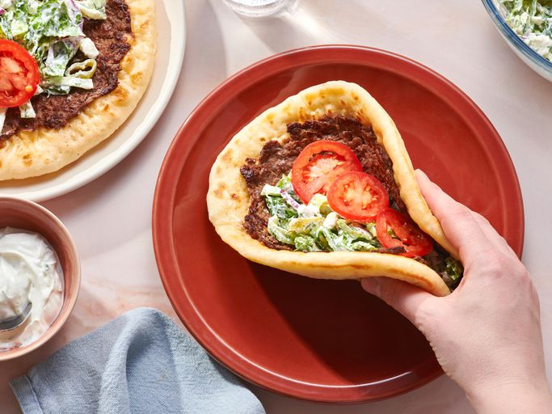

Greek Smashed Pita
This Greek smashed pita is like a cross between a beloved smashburger and a delicious gyros.
Greek-seasoned ground sirloin, topped with salad and tzatziki,
are folded inside a lightly toasted pita for a savory handheld lunch.

Ingredients
- 12 ounces ground sirloin
- 2 cloves garlic, minced
- ½ teaspoon ground cumin
- 1 teaspoon smoked paprika
- 1 teaspoon kosher salt
- ½ teaspoon freshly ground black pepper
- 4 pitas
- 1½ shredded Romaine lettuce
- 1 tablespoon chopped parsley
- 1 tablespoon chopped dill
- 2 tablespoons pepperoncini pepper slices
- 3 tablespoons thinly sliced and chopped red onion
- ¼ cup crumbled feta cheese
- 2 teaspoons fresh lemon juice
- ¼ cup tzatziki sauce
- 1 Roma tomato, thinly sliced
Return Home